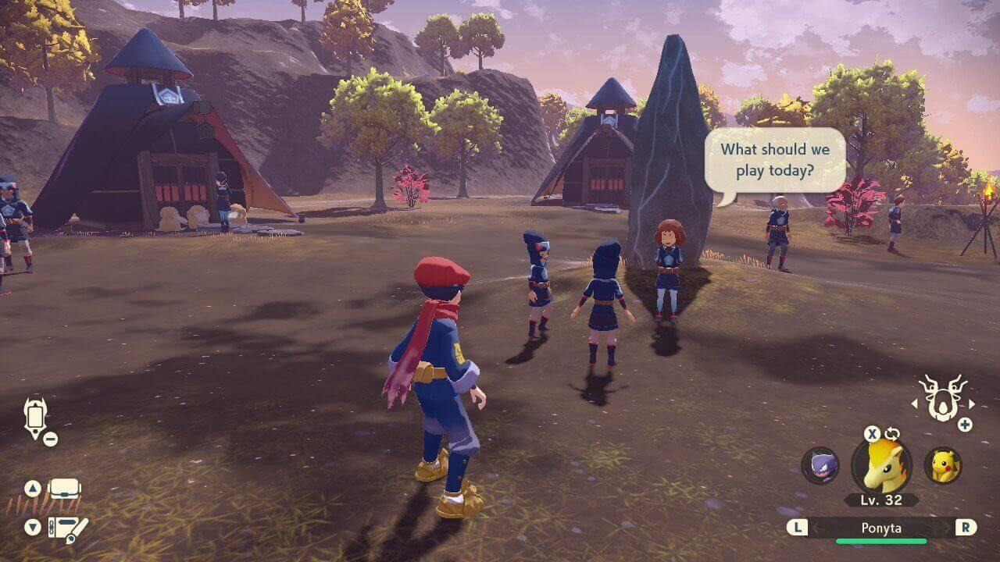

Pantalla OLED de 7 pulgadas (17.78 cm) y Audio mejorado
Deleita tus ojos con colores brillantes y contrastes definidos cuando juegues en el camino. Mira la diferencia que ofrece una pantalla vibrante cuando compites a toda velocidad o cuando combates a tus enemigos. Disfruta de un audio superior en los modos portátil y semiportátil con los altavoces de la consola.